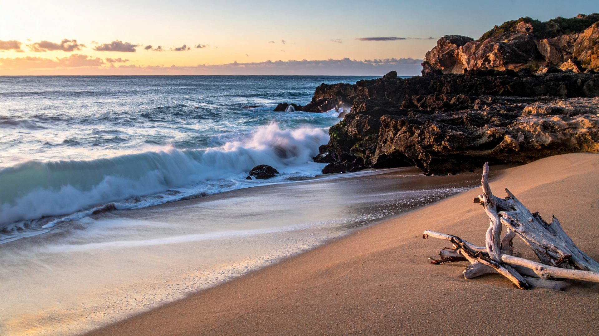

Beaches
Relax and unwind on the beautiful beaches around the world
The directions aren't for the exact location of the beach, The places below tells the places with great beaches

Zanzibar is a tropical island paradise with white sand beaches and crystal-clear waters. Summer brings warm weather perfect for swimming and snorkeling. The island also offers rich history in Stone Town, spice tours, and a relaxed atmosphere ideal for both adventure and relaxation.
🎯 Things to do:
- Snorkeling
- Beach relaxing
- Visit Stone Town
- Spice tours
- Boat trips
- Diving

Seychelles
📍 Location: Seychelles
🌤️ Best Months: April - May, October - November
Seychelles is a tropical archipelago known for its pristine beaches and crystal-clear waters. In summer, the weather is warm and humid, perfect for water activities and beach relaxation. The islands offer unique wildlife, including the endemic Seychelles giant tortoise, and a rich cultural heritage.
🎯 Things to do:
- Snorkeling
- Beach relaxing
- Island hopping
- Diving
- Nature walks
- Boat tours

Mauritius
📍 Location: Mauritius
🌤️ Best Months: May – November
Mauritius is a beautiful island with beaches, lagoons, and mountains. Spring offers pleasant weather and blooming nature. Visitors can relax on beaches or explore inland landscapes.
🎯 Things to do:
- Beach relaxing
- Snorkeling
- Hiking
- Boat trips
- Water sports
- Sightseeing

Cape Town (Camps Bay & Clifton beaches)
📍 Location: Western Cape, South Africa
🌤️ Best Months: December - February
Cape Town is a vibrant coastal city with stunning natural beauty. In summer, visitors enjoy sunny beaches, Table Mountain views, and lively culture. The city blends urban life with outdoor adventures, offering everything from hiking to waterfront dining and scenic drives along the coastline.
🎯 Things to do:
- Climb Table Mountain
- Visit beaches
- Explore V&A Waterfront
- Coastal drives
- Hiking
- Wine tasting

Maldives
📍 Location: Indian Ocean, South Asia
🌤️ Best Months: November – April
The Maldives is a tropical paradise of turquoise waters and overwater villas. Winter offers dry, sunny weather perfect for beach relaxation and water activities. Visitors can explore coral reefs, enjoy luxury resorts, and experience peaceful island life surrounded by stunning ocean views.
🎯 Things to do:
- Snorkeling
- Diving
- Beach relaxing
- Island hopping
- Spa treatments
- Boat tours

Bali
📍 Location: Indonesia
🌤️ Best Months: May – September
Bali is a tropical island paradise known for its beautiful beaches, vibrant culture, and lush landscapes. In summer, the island offers warm weather perfect for beach activities and exploring its many temples and rice terraces. Visitors can enjoy water sports, traditional dance performances, and delicious Indonesian cuisine.
🎯 Things to do:
- Surfing
- Temple visits
- Hiking
- Beach relaxing
- Cultural shows
- Waterfalls

Phuket
📍 Location: Thailand
🌤️ Best Months: November – April
Phuket is a popular beach destination with vibrant nightlife and scenic beaches. Summer offers warm weather and lively atmosphere. Visitors can enjoy water sports and island tours.
🎯 Things to do:
- Snorkeling
- Beach relaxing
- Boat tours
- Nightlife
- Diving
- Markets

Jeju Island
📍 Location: South Korea
🌤️ Best Months: June – August
Jeju Island is a volcanic island with beaches, waterfalls, and lava tubes. Summer brings warm weather ideal for outdoor exploration. Visitors can hike Hallasan Mountain, relax on beaches, and enjoy unique natural attractions and local cuisine.
🎯 Things to do:
- Hiking
- Waterfall visits
- Beach visits
- Cave exploring
- Cycling
- Food tours

Santorini
📍 Location: Greece
🌤️ Best Months: June – September
Santorini is a volcanic island in the Aegean Sea, known for its stunning sunsets, white-washed buildings, and blue-domed churches. In summer, the island offers warm weather perfect for beach activities and exploring its charming villages. Visitors can enjoy wine tastings, boat tours, and breathtaking views of the caldera.
🎯 Things to do:
- Beach activities
- Wine tastings
- Boat tours
- Exploring villages
- Photography
- Views of the caldera

Amalfi Coast
📍 Location: Italy
🌤️ Best Months: June – September
The Amalfi Coast is a stunning stretch of coastline in southern Italy, known for its colorful villages, dramatic cliffs, and crystal-clear waters. In summer, the region offers warm weather perfect for beach activities, boat tours, and exploring its charming towns. Visitors can enjoy fresh seafood, wine tastings, and breathtaking views of the Mediterranean Sea.
🎯 Things to do:
- Beach activities
- Wine tastings
- Boat tours
- Exploring villages
- Views of the caldera
- Cultural tours

Nice
📍 Location: France
🌤️ Best Months: June – September
Nice is a city on the French Riviera, known for its beautiful beaches, vibrant culture, and mild climate. In summer, the city offers a perfect blend of relaxation and entertainment with its numerous beaches, festivals, and cultural events. Visitors can explore the old town, enjoy fresh Mediterranean cuisine, and experience the lively atmosphere of this charming coastal city.
🎯 Things to do:
- Sightseeing
- Beach relaxing
- Walking Tours
- Shopping
- Dining
- Photography

Barcelona
📍 Location: Spain
🌤️ Best Months: June – September
Barcelona is the capital and largest city of Catalonia, known for its rich cultural heritage and beautiful architecture. In summer, the city offers a vibrant atmosphere with beaches, festivals, and delicious cuisine. Visitors can explore Gaudí's masterpieces, enjoy world-class museums, and experience the lively nightlife.
🎯 Things to do:
- Beach activities
- Wine tastings
- Boat tours
- Exploring villages
- Views of the caldera
- Cultural tours

Hawaii
📍 Location: United States
🌤️ Best Months: June – September
Hawaii is a tropical paradise known for its stunning beaches, vibrant culture, and outdoor adventures. In summer, the islands offer warm weather and many activities, making it an ideal time to explore the natural beauty and enjoy water sports.
🎯 Things to do:
- Beach activities
- Hiking
- Snorkeling
- Beach relaxing
- Boat trips
- Volcano Tours

Cancun
📍 Location: Mexico
🌤️ Best Months: December – March
Cancun is a popular resort city on the Yucatan Peninsula in Mexico. In winter, the city offers warm weather and fewer crowds, making it an ideal time to enjoy its beautiful beaches, vibrant nightlife, and cultural attractions.
🎯 Things to do:
- Snorkeling
- Beach Relaxation
- Boat tours
- Ruins visits
- Driving
- Night Life

Los Angeles (Santa Monica, Venice Beach)
📍 Location: California, USA
🌤️ Best Months: November – March
Los Angeles is a vibrant city in California known for its sunny weather, diverse culture, and entertainment industry. In winter, the city offers pleasant temperatures and fewer crowds, making it an ideal time to explore museums, beaches, and the famous Hollywood landmarks.
🎯 Things to do:
- Beach visits
- Beach visits
- Shopping
- Theme parks
- Hiking
- Sightseeing

Vancouver (scenic coastal beaches)
📍 Location: British Columbia, Canada
🌤️ Best Months: November – March
Vancouver is a vibrant city in British Columbia, Canada, known for its stunning natural beauty, diverse culture, and outdoor recreational opportunities. In winter, the city offers pleasant temperatures and fewer crowds, making it an ideal time to explore its parks, museums, and the famous Stanley Park.
🎯 Things to do:
- Park Walks
- Hiking
- Cycling
- Sightseeing
- Food Tours
- Photography

Rio de Janeiro
📍 Location: Brazil
🌤️ Best Months: November – March
Rio de Janeiro is a vibrant city known for its stunning beaches, lush mountains, and lively culture. In winter, the city offers pleasant weather and numerous attractions. Visitors can enjoy the famous Christ the Redeemer statue, explore the bustling streets of Copacabana, and experience the rich cultural scene.
🎯 Things to do:
- Beach activities
- Sightseeing
- Hiking
- Festivals
- Photography
- Food tours

Valparaiso
📍 Location: Northwest of Santiago
🌤️ Best Months: March – May
Valparaiso is a historic port city in Chile, known for its colorful houses, vibrant arts scene, and rich cultural heritage. In winter, the city offers pleasant weather and numerous attractions. Visitors can explore the cobblestone streets, visit museums, and enjoy the lively nightlife.
🎯 Things to do:
- Street art
- Hills
- Views
- Cafés
- Culture
- Walking

Lima
📍 Location: Peru
🌤️ Best Months: December – March
Lima is the capital city of Peru, known for its rich history, vibrant culture, and delicious cuisine. In winter, the city offers pleasant weather and numerous attractions. Visitors can explore the historic center, visit world-class museums, and experience the lively street food scene.
🎯 Things to do:
- Food tours
- Sightseeing
- Hiking
- Festivals
- Photography
- Food tours

Gold Coast
📍 Location: Gold Coast
🌤️ Best Months: December – February
The Gold Coast is Australia’s ultimate summer playground, known for endless beaches, surfing culture, and thrilling theme parks. Warm waters and sunny days create perfect conditions for swimming, nightlife, and adventure, making it a top destination for both relaxation and excitement.
🎯 Things to do:
- Surf at Surfers Paradise
- Visit theme parks
- Relax on beaches
- Explore Burleigh Heads
- Go nightlife hopping
- Coastal walks

Byron Bay
📍 Location: Australia
🌤️ Best Months: December – February
Byron Bay is a relaxed coastal town famous for its laid-back vibe, surfing culture, and stunning sunsets. In summer, it becomes a vibrant hub for beach lovers, musicians, and travellers seeking natural beauty and a peaceful yet energetic atmosphere.
🎯 Things to do:
- Visit Cape Byron Lighthouse
- Surffing
- Watch sunrise
- Explore markets
- Swimming
- Coastal walks

Sydney (Bondi Beach)
📍 Location: New South Wales, Australia
🌤️ Best Months: December – February
Sydney shines in summer with golden beaches, vibrant harbor views, and iconic landmarks like the Opera House. The city buzzes with outdoor festivals, coastal walks, and surfing culture, making it one of the best destinations in the Southern Hemisphere for sun, sea, and energetic city life.
🎯 Things to do:
- Visit the Sydney Opera House
- Relax at Bondi Beach
- Walk the Bondi to Coogee coastal trail
- Take a harbor cruise
- Explore Darling Harbour
- Watch New Year’s fireworks

Great Barrier Reef (island beaches + reef)
📍 Location: Australia
🌤️ Best Months: December – March
The Great Barrier Reef is the world's largest coral reef system, stretching over 2,300 kilometers along the coast of Queensland, Australia. It is home to a diverse array of marine life and offers incredible opportunities for snorkeling and diving.
🎯 Things to do:
- Snorkeling
- Diving
- Boat tours
- Marine tours
- Photography
- Relaxing